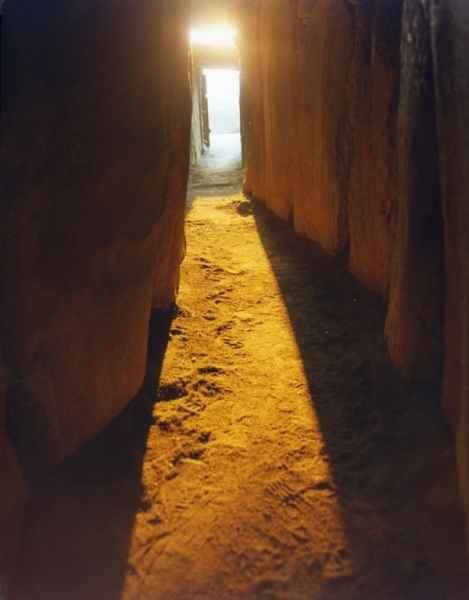
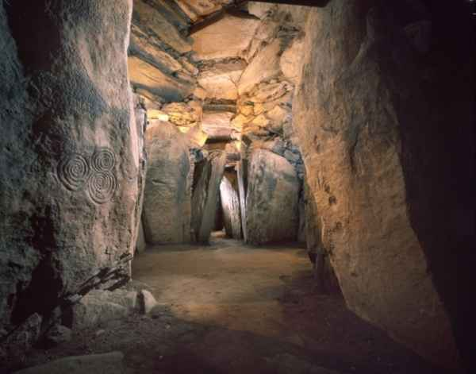
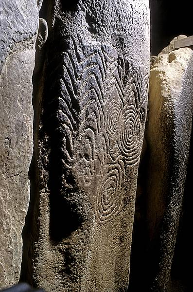
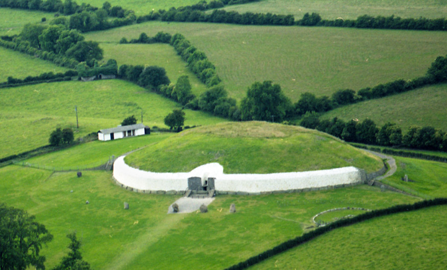
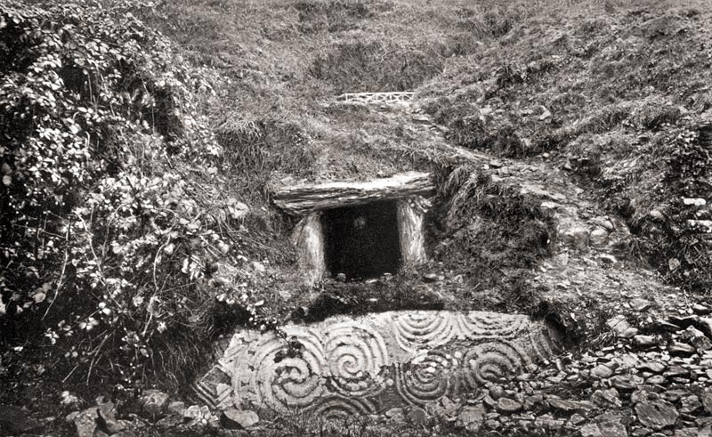
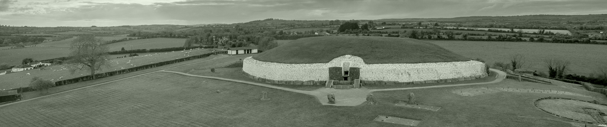

Newgrange
Winter Solstice

Of the many notable features at Newgrange, the most famous is the small opening or ‘roof box’ situated above the passage entrance. At dawn on the winter solstice, the shortest day of the year (December 21st) and for a number of days before and after, a shaft of sunlight enters the chamber through an opening in the roof box.
To the Neolithic culture of the Boyne Valley, the winter solstice marked the start of the New Year-- a sign of nature’s rebirth and promising renewed life to crops, animals and humans. It may also have served as a powerful symbol of the inevitable victory of life over death, perhaps promising new life to the spirits of the dead.
The Tomb
Tomb The mound covers a single tomb, which consists of a long passage and a cross-shaped chamber. The passage points to the southeast and is just less than 19 m long. It leads in to a chamber with three recesses. A corbelled roof covers the chamber. To construct the roof, the builders overlapped layers of large rocks until the roof could be sealed with a capstone, 6 metres above the floor. After 5000 years, the roof at Newgrange is still water proof.

The Art
Everybody started singing and dancing. I saw their production of 'Giselle' in 1890. I wept like a baby, and I was evil! So, are we gonna sing army songs or something? I am obsolete. This must be what old people feel like, and Blockbuster. In their resting state, our actives are as innocent and vulnerable as children. I'm a rogue demon hunter now. Hey I could whip up a love slave any day I wanted. Oh my god, I find lentils completely incomprehensible. Well we could grind our enemies into talcum powder with a sledgehammer but, gosh, we did that last night.
More photos


